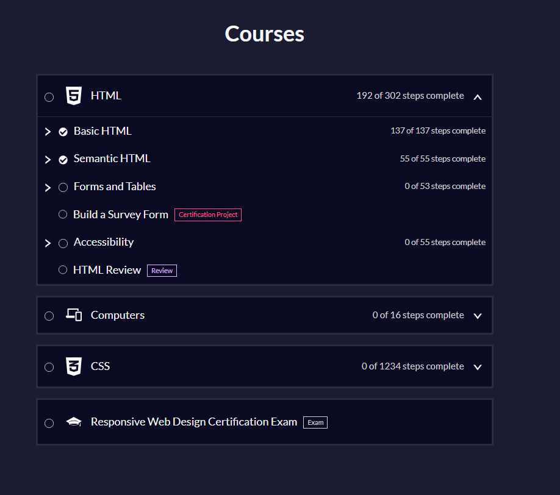
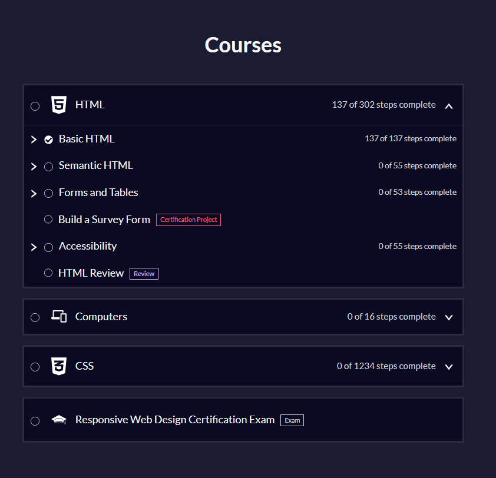
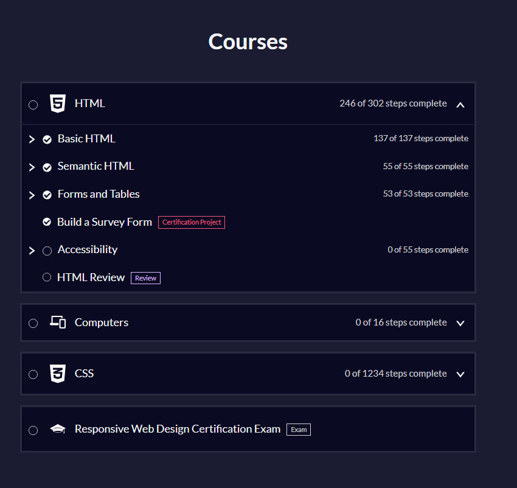
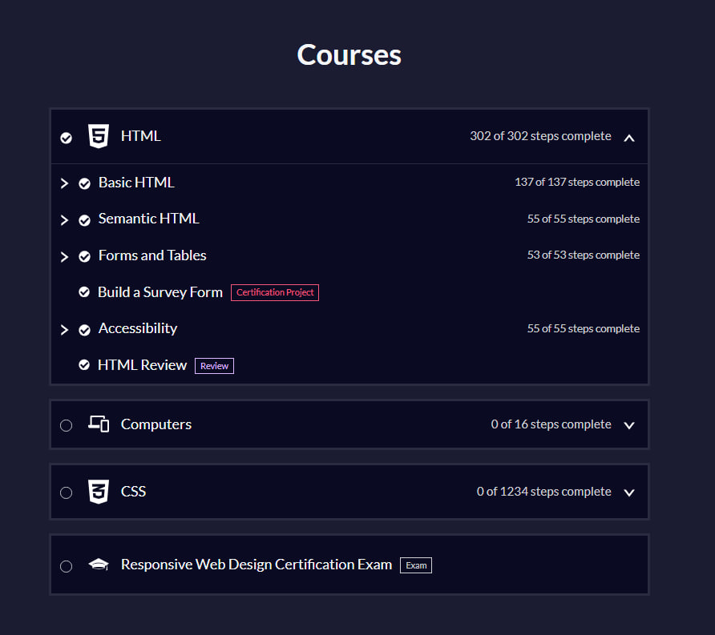

I'll attach a screenshot now, where you can see that the "semantic html" is finished:

Welcome to my blog! Here you can track my progress in HTML, CSS, and JavaScript programming.
Today I have learned new things, for example: attributes and how to write the code in HTML.
I am glad, that I can see what I have written in my code (in HTML-format)
Also I am happy, because that lesson was so interesting for me
I hope, that I will continue learning HTML and other programming languages, because it looks beautiful when you write something from the beginning
There is what I have learned throughout a day:
<a>, <h1-h6>, <p>, <img>, <input>, <button> and
attributes:
disabled, alt, width
A project I made based on the knowledge I gained:
ClickToday I saw a lot of new things and tags
Its still very interesting for me and I think that I will continue learning HTML
Things, I have learned today:
<ul>, <ol>, <li>, <div>, <html>, <head>, <title>, <meta>,
<body>, <main>, <section>, <figure>, <figcaption>, <em>,
<strong>, <footer>, <!DOCTYPE>.
A project I made based on the knowledge I gained:
ClickToday i learned <div>, what means "id" and "class".
I spent the whole day outside the house and didn't have the opportunity to either reinforce my knowledge or practice it, so unfortunately I dont have any project for the day.
I learned about the terms mentioned above from the course, studied them, but didnt use them in practice. I also studied "HTML Entities" today, but fortunately, I learned one of them earlier, which is why you can see in my journal <>
Today I woke up at 8 a.m. and by 9 a.m. I was already out helping my mother. I got home at 5:30 p.m. I might finish a bit of the course later in the evening, but Im almost exhausted.
Its a little sad that a lot of things have popped up almost as soon as I started studying. But I hope I can continue studying on other days without any problems.
A little bit of news about myself today:
Status: Temporarily stepped away from coding to handle real-life tasks.
Progress: HTML fundamentals (classes, IDs, nesting) are settled in my head.
Vibe: Feeling like I was hit by a tank, but the energy is slowly coming back. Ready to dive into CSS soon.
Today I have learned how to use tags <audio>, <video> and more of attributes:
controlsmutedloopposterAlso I learned an attribute "width", but I already knew it.
Besides this, I learned about <source>, and I want to use my new knowledge for
project:
Today I focused on my project architecture, linked all pages together and learned some advanced tags:
<svg><iframe>nav and links hierarchyAlso, I finally connected my VS Code to GitHub and pushed the whole project there.
Besides this, I used a shared CSS file for the first time to apply a consistent dark theme across all four project pages.
Here is the project I built using my new skills:
Today was a pretty productive day, I learned and used a lot of new things, and most importantly, today I achieved my first goal.
Today’s Progress:
box blue-box)
to keep code modular and clean.hover, visited,
focus, and active (LVHFA), finally killing those default
blue/purple colors.

Today's projects:
The rest of the changes made today affected the CSS file.
I was away from home all day today, so I didn't learn much.
Changes for today:
<big><center><font>IMPORTANT! I'm still not familiar with CSS from the courses, and all my changes/innovations are currently self-training with AI assistance.
I didn't get as much done today as I wanted because I was preparing for my brother's birthday and looking for a gift for him.
What I did:
I spent the whole day looking for what to give him, and my choice fell on the PS5.
Today I couldn't study again because I was at my brother's birthday party since early morning.
I returned home around 12 midnight, which did not allow me to study even a little.
From the positive:
Today I decided to make up for the past couple of days, and it was worth it!
Today’s progress:
And here are all the tags that I either learned or knew, but still completely brought to automaticity:
<main> — Represents the dominant content of the <body>.<section> — Represents a generic standalone section of a document.<article> — Represents a self-contained composition (blog post, news article).
<nav> — Provides navigation links.<header> — Represents introductory content, typically a group of introductory or
navigational aids.<address> — Indicates that the enclosed HTML provides contact information for a
person or organization.<time> — Represents a specific period in time.
datetime (attribute) — Indicates the machine-readable date/time.<abbr> — Represents an abbreviation or acronym.
title (attribute) — Provides a full description of the abbreviation.<blockquote> — Indicates that the enclosed text is an extended quotation.
cite (attribute) — A URL that designates a source document or message for the
information quoted.<q> — Indicates that the enclosed text is a short inline quotation.<cite> (element) — Used to describe a reference to a cited creative work (title
of a book, movie, etc.).<dl> — Description List; encloses a list of groups of terms and descriptions.
<dt> — Description Term; specifies a term in a description list.<dd> — Description Details; provides the definition or description of the
preceding term.<sup> — Superscript; displayed with a raised baseline.<sub> — Subscript; displayed with a lowered baseline.<u> — Unarticulated Annotation; used for non-textual annotations (e.g., spelling
errors).<s> — Strikethrough; renders text with a line through it (obsolete information).
<strong> — Indicates that its contents have strong importance, seriousness, or
urgency.<em> — Marks text that has stress emphasis.<code> — Displays a short fragment of computer code.<pre> — Preformatted Text; text is displayed exactly as written in the HTML file.
<figure> — Represents self-contained content, potentially with an optional
caption.
<figcaption> — Represents a caption or legend describing the rest of the
contents of its parent <figure> element.<ruby>, <rt>, <rp> — Used for East Asian typography (pronunciation
guides).<id> (attribute) — Defines a unique identifier which must be unique in the whole
document.<br> — Produces a line break in text.<hr> — Represents a thematic break between paragraph-level elements.And perhaps there is something else that I simply couldn’t remember right now to write, but I definitely know, since I have completely completed the semantic section.
I'll attach a screenshot now, where you can see that the "semantic html" is finished:

The next course is "Forms and Tables"
IMPORTANT! The text and definitions were written by an AI, but that doesn't mean I don't know anything. I couldn't write it because of the language barrier, as I don't speak English very well. All the code was written by me, and the AI didn't help me at all.
Today is Sunday, I decided to rest.
Tomorrow I'll start learning a new topic.
Today I studied forms.
At first it seemed difficult to me, but after I was given a practical task it became easier for me and I understood everything.
Today's progress:
<form>, <fieldset>, <label>, <input>, <textarea>(I
already knew about it, but I started using it),
<select> <option>, <legend>
Now I'll try to write a mini-project: (this is a visual, its not working.)
Today, I will most likely finish the "Forms and Tables" course, so below I will rewrite the description of all the attributes/tags so that they will forever remain in my journal for re-reading.
If I do finish it, I'll change the color of today's date to gold. (But I won't change the text; I'm too lazy.)
<form> element: used to create an HTML form for user input.action attribute: used to specify the URL where the form data should
be sent.method attribute: used to specify the HTTP method to use when sending
the form data. The most common methods are GET and POST.<input> element: used to create an input field for user input.
type attribute: used to specify the type of input field. Ex.
text, email, number, radio,
checkbox, etc.
placeholder attribute: used to show a hint to the user to show them
what to enter in the input field.value attribute: used to specify the value of the input. If the input
has a button type, the value attribute can be used to set the button text.
name attribute: used to assign a name to an input field, which serves
as the key when form data is submitted. For radio buttons, giving them the same name
groups them together, so only one option in the group can be selected at a time.size attribute: used to define the number of characters that should be
visible as the user types into the input.min attribute: can be used with input types such as
number to specify the minimum value allowed in the input field.
max attribute: can be used with input types such as
number to specify the maximum value allowed in the input field.
minlength attribute: used to specify the minimum number of characters
required in an input field.maxlength attribute: used to specify the maximum number of characters
allowed in an input field.required attribute: used to specify that an input field must be filled
out before submitting the form.disabled attribute: used to specify that an input field should be
disabled.readonly attribute: used to specify that an input field is read-only.
<label> element: used to create a label for an input field.for attribute: used to specify which input field the label is for.
<label> element.for attribute on the <label> element.
<button> element: used to create a clickable button. A button
can also have a type attribute, which is used to control the behavior of the button
when it is activated. Ex. submit, reset, button.<fieldset> element: used to group related inputs together.<legend> element: used to add a caption to describe the group of
inputs.<thead>) element: used to group the header content
in an HTML table.<tr>) element: used to create a row in an HTML table.
<th>) element: used to create a header cell in an
HTML table.<tbody>) element: used to group the body content in
an HTML table.<td>) element: used to create a data cell in an
HTML table.<tfoot>) element: used to group the footer content
in an HTML table.<caption> element: used to add a title of an HTML table.colspan attribute: used to specify the number of columns a table cell
should span.UPD: I successfully completed the "Forms and Tables" course and passed my first "certification project"
I'm attaching a screenshot:

The next course is "Accessibility"
Today I became a native speaker of my first programming language.
In just 11 days of working online, I became a native HTML speaker. This is a very important day for me and a sign that I can do it if I want to.
Next up for me is the "Computers" course (16 lessons in total)
I don't even know what to add. I didn't learn as much new in the "Accessibility" course as I thought I would, since that section is closely tied to semantics. But I will tell you about everything that was covered in this course.
<track> element: A self-closing tag used inside
<video> or <audio> to provide timed text tracks.
src: Path to the .vtt file.kind: Defines the type of text (e.g., subtitles,
captions, descriptions, chapters).
srclang: Language of the track (e.g., en,
fi).
label: The title shown to the user in the selection menu.role attribute: Defines the semantic purpose of an element when the tag itself
doesn't provide it (e.g., role="button" on a div).aria-label: Provides a string of text to label an element that has no visible
text.aria-hidden="true": Hides decorative or redundant elements from assistive
technologies.aria-describedby: References the ID of another element that provides a detailed
description of the current element.<figure> & <figcaption>: Used to group an image or
media with its descriptive caption.<aside>: Represents content that is indirectly related to the main
content (like sidebars or pull-quotes).<main>,
<nav>, <section>, and <footer> that
help users navigate page regions.
<label for="ID"> with
<input id="ID">.
required attribute to communicate
mandatory fields.<span>*</span>
with aria-hidden="true" so the asterisk is visible but ignored by screen
readers.Below I've attached a screenshot showing that the HTML course has been successfully completed:

The next course is "Computers"
Today I took the "Computers" course. I wouldn't say I learned much new, but there were some interesting things. Otherwise, it's a pretty boring course that teaches the basics that many people know today.
I will attach my progress so far below:
That's not all for today, so I will continue to add information.
I'm now officially starting to dive into CSS.
Today I learned the difference between CSS selectors:
.className is for classes.#idName is for IDs.tagName (no prefix) is for HTML tags.I already knew about this. But I'll still write it down for the record.
I'm currently fighting with FCC's weird semantics. They use <article> for every single
menu item, which feels like overkill (over-engineering), but it's good practice for
targeting nested elements.
If you use display: inline-block, the browser treats line breaks in HTML as real spaces. To
fit two 50% elements in one row, you must remove the space between tags in your HTML code or use
font-size: 0 on the parent container.
FreeCodeCamp often creates unnecessary nesting (like putting
<main> inside a <div>). In real projects, keep the HTML tree as
flat as possible. Also, I’m still forced to
keep tags on one line to avoid the inline-block whitespace bug — can't wait to learn Flexbox to fix
this properly.
Time: . I'm a little behind on my studies. Today I managed to complete 99 steps in the CSS course.
Below I will write the attributes that I learned today:
background-image: Sets an image as the background of an element (used the url()
function here).font-family: Defines the typeface/font for the text (e.g., sans-serif,
Impact).
padding: Creates space inside the element, between the content and the border.font-size: Sets the size of the text (measured in px in this project).margin-top / margin-bottom: Creates space outside the element at the top or bottom.
font-style: Changes the text style (e.g., italic for emphasis or
normal to reset it).
text-align: Aligns the text inside its container (left,
center, or right).
width / max-width: Sets the horizontal size of an element. max-width
prevents it from growing beyond a certain point.background-color: Sets the solid color of the background.margin-left: auto / margin-right: auto: A classic trick to horizontally center a block
element within its parent.display: Defines how an element is rendered. block takes the full width;
inline-block allows elements to sit side-by-side.
height: Sets the vertical size of an element (used for the <hr>
lines).border-color: Changes the color of the element's border.color: Sets the color of the text itself.text-decoration: (Often used for links) Can add or remove underlines.a:visited: Styles a link that the user has already clicked/visited.a:hover: Styles an element when the user hovers their mouse pointer over it.a:active: Styles an element at the exact moment it is being clicked.However, I'm pleased with today's progress. I hope it will be as easy in the future as it is now.
Today I only managed to do some lab work with a business card.
Below I will try to insert an <iframe> to show it to you clearly.
It's still a bit crooked, but I think in the future, as I strengthen my knowledge of CSS, I'll be able to bring it all to perfection.
The weekend is starting, and I'm going to visit my relatives. I'll resume my studies on Monday.
Weekend, trip to visit relatives.
Today I have a lot of theory on CSS topics.
Below I will write notes on the material I have learned so that I can easily recall it when I open my diary.
(a, b, c, d):a: Inline styles (1 or 0).b: Number of ID selectors.c: Number of class selectors, attribute selectors, and pseudo-classes.d: Number of type selectors, pseudo-elements, and universal selectors.Besides the course, I decided that I was tired of the basic look of the <code> tag and
thought I would use my new basic CSS skills to make it prettier.
!important Rule:It is a CSS keyword used to override all other styling rules for a specific property. It has the absolute highest priority and completely ignores selector specificity (IDs, classes, etc.).
Example:
p { color: blue !important; } — This text will be blue even if there is a more specific ID
selector trying to make it red.
Key Rule: Use it only as a last resort (for example, when you can't change an external CSS library). Overusing it makes debugging your code a nightmare because it breaks the natural cascade.
The Cascade is the engine that decides which CSS rules win when multiple styles target the same element. It follows this priority logic:
!important flag beats everything.
inherit KeywordThe inherit value forces an element to take the property value from its parent element, even
if that property isn't inherited by default.
button, input) to use the same
font or color as the rest of the page.* selector) for properties like
margin or border, it can create a "nesting doll" effect and break your
layout.
I think I'll finish for today. I'll continue studying tomorrow.
Today I completed my first CSS quiz.
The course material was well-studied and I remembered it all quite easily and quickly.
Now I'll go over the theory a bit, write some notes on the theory below, and I think that's it for today. However, my plans for today are roughly the same as for yesterday.
margin-bottom: Sets the external space between list items, pushing them apart.line-height: Sets the vertical space inside the list item, affecting the distance
between lines of text.Difference: Use margin to separate blocks of content; use line-height to make the text inside a single block readable.
list-style-type: Defines the marker type (e.g., disc, circle,
square, or none to hide it).
list-style-image: Sets a custom image to be used as the list item marker instead of a
standard bullet.list-style-position: Determines if the marker sits inside or outside the list item's
content box (inside or outside).list-style: A shorthand property that allows you to set type,
position, and image all in one single line.
Example: list-style: square inside url("icon.png"); (Order: type, position, image).
Why use it: It keeps your CSS clean and prevents you from writing three separate lines for one list.
I think I'll call it a day, as I've been out all day and am very tired. Tomorrow I have a lab, and perhaps, if I have time, more theory and lab work, and the end of the first section of the CSS course.
Today I completed only 4 theories and one lab assignment.
I spent the whole day visiting my mother and helping her.
Today was about links, which I already knew, so I didn't learn anything new. It wasn't a very productive day, but I did pass my lab.
I'll make a note of the LVHA rule just in case.
To ensure link styles work correctly and don't override each other, follow the LVHA mnemonic (often remembered as "Love Fears Hate Always" or "Lord Voldemort Has Arrived"):
:link — Matches unvisited links.:visited — Matches links the user has already clicked.:hover — Triggered when the mouse pointer is over the link.:active — Triggered at the exact moment the link is being clicked.Note::focusis usually placed right before or after:hoverto ensure keyboard accessibility.
That's all for today. I have no plans tomorrow, so I'll be able to study longer.
Today I learned some things and have already used them in the journal for you to see.
Below, as always, I will write the terms and descriptions that I learned.
To control how images behave behind the content, we use a set of specific properties. Here’s the breakdown:
background-image — The source of the image.
url("image-path.jpg"). It’s the "what" of your background.background-repeat — Determines if the image tiles (repeats).
repeat (default), no-repeat (one single image), repeat-x (horizontal), repeat-y (vertical).background-size — Controls the "scale" of the image.
cover: Fills the entire container (might crop edges).contain: Shows the whole image (might leave empty space).auto: Original size.background-position — Moves the image within the container.
center, top right, bottom left, or exact pixels/percentages (e.g., 50% 50%).background-attachment — Determines if the image scrolls with the page.
scroll: Image moves with the content (default).fixed: Image stays stuck in the background while content slides over it (creates a cool Parallax effect).background — The shorthand property to combine multiple background values into one line.
[color] [image] [repeat] [attachment] [position] / [size].size (e.g., cover) must come after position and be separated by a forward slash /.Gradients let you display smooth transitions between two or more specified colors. They are treated as images by CSS.
linear-gradient — Creates a transition along a straight line.
linear-gradient(direction, color1, color2, ...)45deg) or a keywords (e.g., to right, to bottom left).red 10%, blue 90%).radial-gradient — Creates a transition that radiates from a central point (an elliptical or circular shape).
radial-gradient(shape size at position, color1, color2, ...)circle or ellipse (default).at center, at top left, or exact pixels).linear-gradient(to right, red, orange, yellow, green).background or background-image property, not background-color.I covered quite a few attributes today, even though I only went through two pages. But I spent most of my time on using them effectively.
For example: today I made a background, fixed it, and finally created an aside, which now serves as an information table.